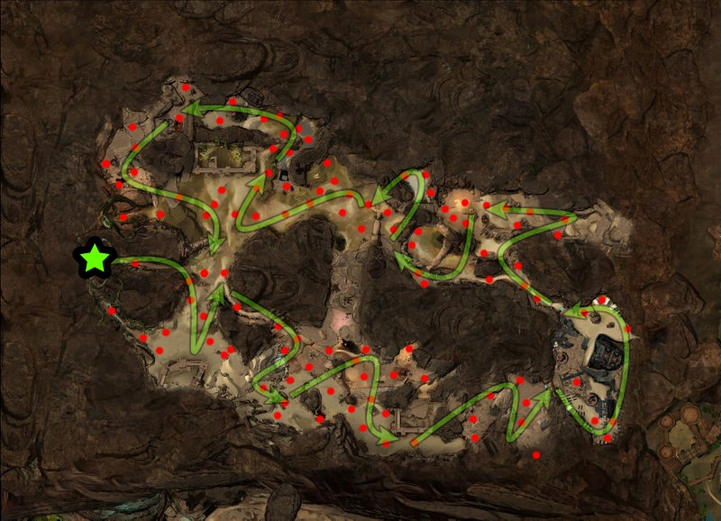
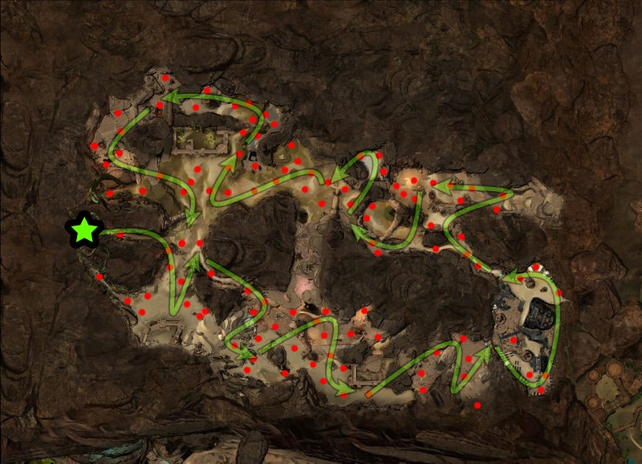
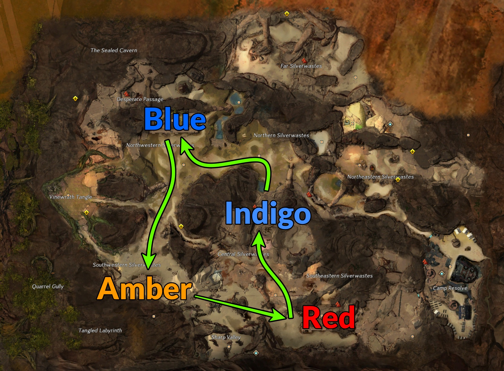
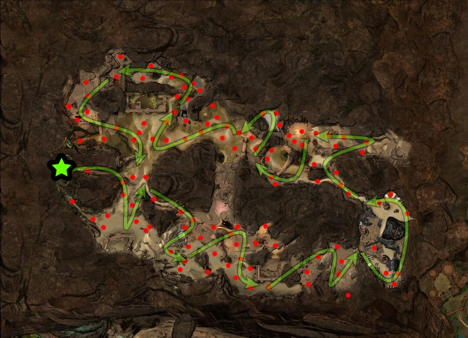
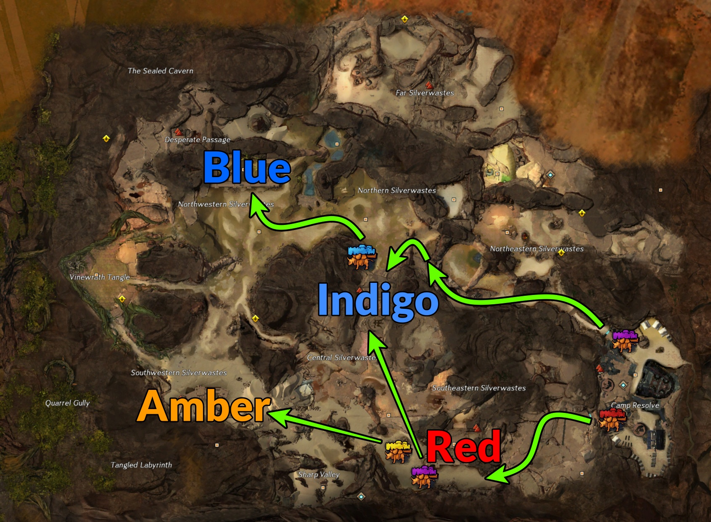

Silverwaste farming is more commonly known as RIBA. RIBA stands for Red → Indigo → Blue → Amber camps. This is the order of rotation that the train will proceed to get the most of the map and their events.
With the RIBA rotation going, this farm takes advantages of two things: Map Bonus Rewards & Lost Bandit Chests. Unlike most maps, the map bonus rewards do not change per week. From most lucrative map bonus rewards to the least: Bag of Gear → Silverwaste Shovel → Bandit Crest → Pile of Silky Sand.
 

Bags of Gear — Depending on what level character you open this on, can determine what kind of gear you recieve. Check out Silverwaste Loltools to see what character level is currently the most profitable. Otherwise, if you open on a level 80, you'll get lots of Unidentified Gear, which is still great! With Unidentified Gear, check out my Salvage page.
Silverwastes Shovel — This is what's used to find the Lost Bandit Chests. This can also be purchased in exchange for Bandit Crests (the map currency) via Vendor at the first waypoint. You could even sell these to guilds that need it for their guild hall.
Bandit Crests — This is the map currency. Use these to buy shovels. For extra profits, you could use them to buy Sandy Bag of Gear or Bag of Stolen Goods. Their estimated profit margins can be found on my Currency Worth page.
Pile of Silky Sand — This material can be found in both Silverwastes and Dry Top. By consuming 10 (you'll get a lot), you get a chance to get Bandit Crests, Geodes, keys, or other materials. It's always worth-wild to consome what you get.

With the RIBA rotation going, this farm takes advantages of two things: Map Bonus Rewards & Lost Bandit Chests. Unlike most maps, the map bonus rewards do not change per week. From most lucrative map bonus rewards to the least: Bag of Gear → Silverwaste Shovel → Bandit Crest → Pile of Silky Sand.

Bags of Gear — Depending on what level character you open this on, can determine what kind of gear you recieve. Check out Silverwaste Loltools to see what character level is currently the most profitable. Otherwise, if you open on a level 80, you'll get lots of Unidentified Gear, which is still great! With Unidentified Gear, check out my Salvage page.
Silverwastes Shovel — This is what's used to find the Lost Bandit Chests. This can also be purchased in exchange for Bandit Crests (the map currency) via Vendor at the first waypoint. You could even sell these to guilds that need it for their guild hall.
Bandit Crests — This is the map currency. Use these to buy shovels. For extra profits, you could use them to buy Sandy Bag of Gear or Bag of Stolen Goods. Their estimated profit margins can be found on my Currency Worth page.
Pile of Silky Sand — This material can be found in both Silverwastes and Dry Top. By consuming 10 (you'll get a lot), you get a chance to get Bandit Crests, Geodes, keys, or other materials. It's always worth-wild to consome what you get.
Other Events
While still following the RIBA rotation, there are Caravan escorts that spawn. When the squad unlocks all 4 camps, there are 4 potential escorts you can hit while farming. As long as they get completed, they will continuously farm until the map reaches meta. Each escort will stop 3 times for a wave of enemies each. Tagging one wave is enough to get credit for the event. The most common escorts to complete at the Purple, Yellow, and Blue ones.
